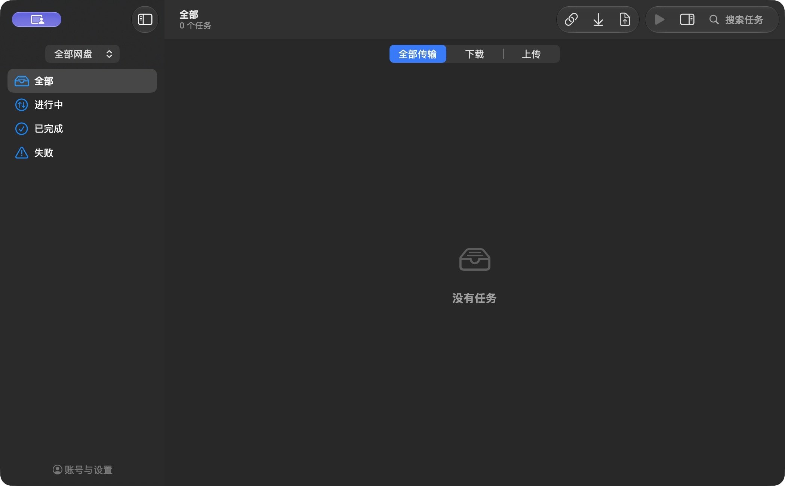
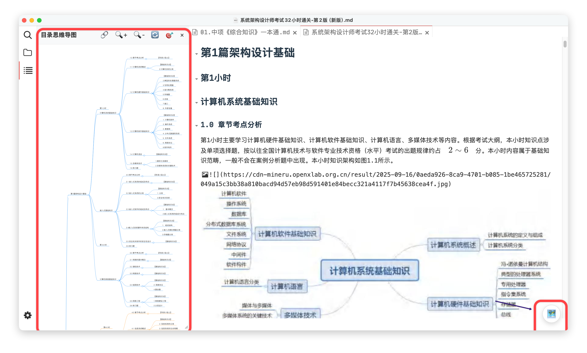

macOS · Apple Silicon
Ferry Plus
两个网盘，一个传输窗口。
在 Mac 上上传、下载百度和夸克网盘文件。管理传输任务，也核对文件内容是否一致。
- 双网盘上传与下载
- 暂停续传
- 内容校验
基于 Ferry 持续改进。


围绕实际需求，定制和改进开源工具。
两个网盘，一个传输窗口。
在 Mac 上上传、下载百度和夸克网盘文件。管理传输任务，也核对文件内容是否一致。
基于 Ferry 持续改进。

常用操作，放进 Finder 右键。
在当前文件夹新建文件、复制完整路径，或打开你常用的终端。几个小操作，少绕一点路。
参考并复用 MacNewFile 的部分资源。
连接内网，简单一点。
通过原生界面连接 EasyConnect 授权内网。保存常用连接，密码放入系统钥匙串，关闭窗口也能保持连接。
连接核心基于 ZJU Connect。
换个视角，读懂长文档。
把 Markdown 标题与正文变成思维导图。边看结构，边跳转阅读，也能把导图导出分享。
基于 Markmap Plus 改进；需安装 Typora Community Plugin。

给闲置音箱留一条静音流。
在托盘中运行，向选定音箱持续发送静音数据，尝试避免闲置自动关机。断线后等待重连，不改变系统音量。
保活效果取决于音箱固件，需在自己的设备上验证。
安装要求、使用说明和更新记录见各工具的 GitHub 页面。遇到问题，欢迎在对应仓库提交 Issue。